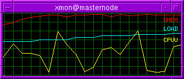
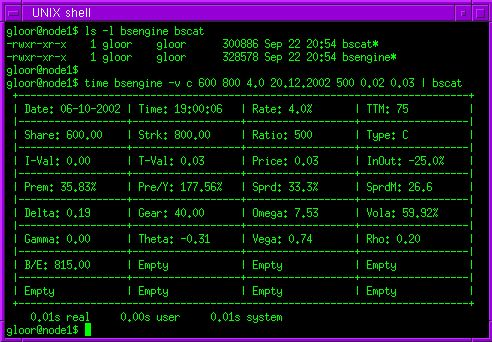
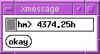
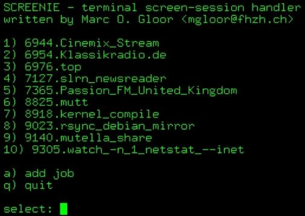
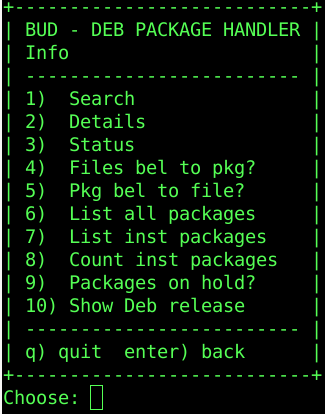
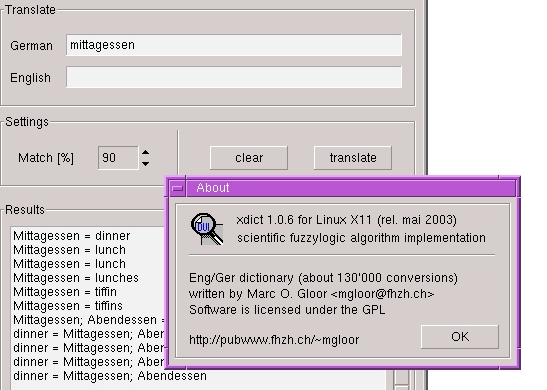
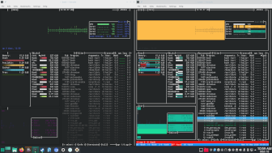
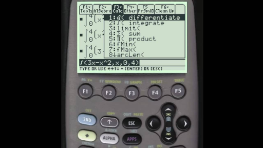
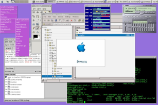
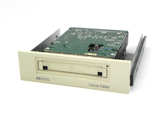

Pulsechain Validator
GitHub repository
Pulsechain Wikipedia
Wikipedia article draft
pDAI Wikipedia
Wikipedia article draft
Open Access Memo
Tech Guideline

xmon for Linux
Lightweight System Monitor

Bsengine for Linux
Derivatives Pricing Backend

Hourmeter for Linux
Operations Lifecycle Tracking

screenie for Linux
GNU Screen session handler

buddy for Linux
Debian package manager

xdict for Linux
Universal Fuzzy Logic Lookup

GNU Screen Patch
Password deactivation
Blender Workload Manager
Cluster Load balancing
Tech Contributions
Contributions & fixes
XFCE Binaries
RS/6000 & Sun workstations
Misc Animations
Animated in Blender
Animated XFCE Logos
Animated in Blender

Newton Iteration
TI-89 calculator script
flops for Linux
Linux benchmark
Casio Exilim
Linux camera support

Debian on PowerBook
Installation Instructions
Linux & Compaq
Installation Instructions

Linux & HP-Colorado
Travan streamer (German)
Supercomputing Event
Turich Event photos 2000
Linuxday 2003
Karlsruhe
Pfäffikersee Zürich
Exakte Distanz Wanderweg
Debian Switzerland
Usenet Post from late 1999